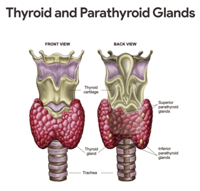
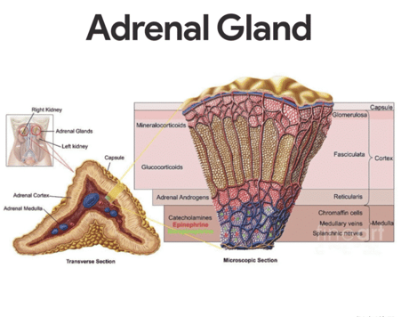
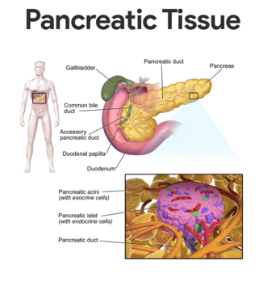

There are several hormones of the anterior pituitary hormones that affect many body organs.
Hormones of the Posterior Pituitary
The posterior pituitary is not an endocrine gland in the strict sense because it does not make the peptide hormones it releases, but it simply acts as a storage area for hormones made by hypothalamic neurons.
• Oxytocin. Oxytocin is released in significant amount only during childbirth and in nursing women; it stimulates powerful contractions of the uterine muscle during labor, during sexual relations, and during breastfeeding and also causes milk ejection (let-down reflex) in a nursing woman.
• Antidiuretic hormone (ADH). ADH causes the kidneys to reabsorb more water from the forming of urine; as a result, urine volume decreases and blood volume increases; in larger amounts, ADH also increases blood pressure by causing constriction of the arterioles, so it is sometimes referred to as vasopressin.
Thyroid Gland
The thyroid gland is a hormone-producing gland that is familiar to most people primarily because many obese individuals blame their overweight condition on their “glands” (thyroid).

• Location. The thyroid gland is located at the base of the throat, just inferior to the Adam’s apple, where it is easily palpated during a physical examination.
• Lobes. It is a fairly large gland consisting of two lobes joined by a central mass, or isthmus.
• Composition. Internally, the thyroid gland is composed of hollow structures called follicles, which store a sticky colloidal material.
• Types of thyroid hormones. Thyroid hormone often referred to as the body’s major metabolic hormone, is actually two active, iodine-containing hormones, thyroxine or T4, and triiodothyronine or T3.
• Thyroxine. Thyroxine is the major hormone secreted by the thyroid follicles.
• Triiodothyronine. Most triiodothyronine is formed at the target tissues by conversion of the thyroxine to triiodothyronine.
• Function. Thyroid hormone controls the rate at which glucose is “burned” oxidized, and converted to body heat and chemical energy; it is also important for normal tissue growth and development.
• Calcitonin. Calcitonin decreases blood calcium levels by causing calcium to be deposited in the bones; calcitonin is made by the so-called parafollicular cells found in the connective tissues between the follicles.
Parathyroid Glands
The parathyroid glands are mostly tiny masses of glandular tissue.
• Location. The parathyroid glands are located on the posterior surface of the thyroid gland.
• Parathormone. The parathyroids secrete parathyroid hormone (PTH) or parathormone, which is the most important regulator of calcium ion homeostasis of the blood; PTH is a hypercalcemic hormone (that is, it acts to increase blood levels of calcium), whereas calcitonin is a hypocalcemic hormone.; PTH also stimulates the kidneys and intestines to absorb more calcium.
Adrenal Glands
Although the adrenal gland looks like a single organ, it is structurally and functionally two endocrine organs in one.

Hormones of the Adrenal Cortex
The adrenal cortex produces three major groups of steroid hormones, which are collectively called corticosteroids– mineralocorticoids, glucocorticoids, and sex hormones.
• Mineralocorticoids. The mineralocorticoids, primarily aldosterone, are produced by the outermost adrenal cortex cell layer; mineralocorticoids are important in regulating the mineral (or salt) content of the blood, particularly the concentrations of sodium and potassium ions and they also help in regulating the water and electrolyte balance in the body.
• Renin. Renin, am enzyme produced by the kidneys when the blood pressure drops, also cause the release of aldosterone by triggering a series of reactions that form angiotensin II, a potent stimulator of aldosterone release.
• Atrial natriuretic peptide (ANP). ANP prevents aldosterone release, its goal being to reduce blood volume and blood pressure.
• Glucocorticoids. The middle cortical layer mainly produces glucocorticoids, which include cortisone and cortisol; glucocorticoids promote normal cell metabolism and help the body to resist long-term stressors, primarily by increasing blood glucose levels, thus it is said to be a hyperglycemic hormone; it also reduce pain and inflammation by inhibiting some pain-causing molecules called prostaglandins.
• Sex hormones. Both male and female sex hormones are produced by the adrenal cortex throughout life in relatively small amounts; although the bulk of sex hormones produced by the innermost cortex layer are androgens (male sex hormones), some estrogens (female sex hormones), are also formed
Hormones of the Adrenal Medulla
The adrenal medulla, like the posterior pituitary, develops from a knot of nervous tissue.
• Catecholamines. When the medulla is stimulated by sympathetic nervous system neurons, its cells release two similar hormones, epinephrine, also called adrenaline, and norepinephrine (noradrenaline), into the bloodstream; collectively, these hormones are referred to as catecholamines.
• Function. Basically, the Catecholamines increase heart rate, blood pressure, and blood glucose levels and dilate the small passageways of the lungs; the catecholamines of the adrenal medulla prepare the body to cope with a brief or short-term stressful situation and cause the so-called alarm stage of the stress response.
Pancreatic Islets
The pancreas, located close to the stomach in the abdominal cavity, is a mixed gland.

• Islets of Langerhans.The islets of Langerhans also called pancreatic islets, are little masses of hormone-producing tissue that are scattered among the enzyme-producing acinar tissue of the pancreas.
• Hormones. Two important hormones produced by the islet cells are insulin and glucagon.
• Islet cells. Islet cells act as fuel sensors, secreting insulin and glucagon appropriately during fed and fasting states.
• Beta cells. High levels of glucose in the blood stimulate the release of insulin from the beta cells of the islets.
• Alpha cells. Glucagon’s release by the alpha cells of the islets is stimulated by low blood glucose levels.
• Insulin. Insulin acts on just about all the body cells and increases their ability to transport glucose across their plasma membranes; because insulin sweeps glucose out of the blood, its effect is said to be hypoglycemic.
• Glucagon. Glucagon acts as an antagonist of insulin; that is, it helps to regulate blood glucose levels but in a way opposite that of insulin; its action is basically hyperglycemic and its primary target organ is the liver, which it stimulates to break down stored glycogen into glucose and release the glucose into the blood.
Pineal Gland
The pineal gland, also called the pineal body, is a small cone-shaped gland.
• Location. The pineal gland hangs from the roof of the third ventricle of the brain.
• Melatonin. Melatonin is the only hormone that appears to be secreted in substantial amounts by the pineal gland; the levels of melatonin rise and fall during the course of the day and night; peak levels occur at night and make us drowsy as melatonin is believed to be the “sleep trigger” that plays an important role in establishing the body’s day-night cycle.
Thymus Gland
________________________________________
The thymus gland is large in infants and children and decreases in size throughout adulthood.
• Location. The thymus gland is located in the upper thorax, posterior to the sternum.
• Thymosin. The thymus produces a hormone called thymosin and others that appear to be essential for normal development of a special group of white blood cells (T-lymphocytes, or T cells) and the immune response.
Gonads
Main Article: Female Reproductive System and Male Reproductive System
The female and male gonads produce sex hormones that are identical to those produced by adrenal cortex cells; the major difference are the source and relative amount produced.
Hormones of the Ovaries
The female gonads or ovaries are a pair of almond-sized organs.
• Location. The female gonads are located in the pelvic cavity.
• Steroid hormones. Besides producing female sex cells, ovaries produce two groups of steroid hormones, estrogen, and progesterone.
• Estrogen. Alone, the estrogens are responsible for the development of sex characteristics in women at puberty; acting with progesterone, estrogens promote breast development and cyclic changes in the uterine lining (menstrual cycle).
• Progesterone. Progesterone acts with estrogen to bring about the menstrual cycle; during pregnancy, it quiets the muscles of the uterus so that an implanted embryo will not be aborted and helps prepare breast tissue for lactation.
Hormones of the Testes
The testes of the male are paired oval organs in a sac.
• Location. The testes are suspended in a sac, the scrotum, outside the pelvic cavity.
• Male sex hormones. In addition to male sex cells, or sperm, the testes also produce male sex hormones, or androgens, of which testosterone is the most important.
• Testosterone. At puberty, testosterone promotes the growth and maturation of the reproductive system organs to prepare the young man for reproduction; it also causes the male’s secondary sex characteristics to appear and stimulates male sex drive; Testosterone is also necessary for the continuous production of sperm.
Other Hormone-Producing Tissues and Organs
Besides the major endocrine organs, pockets of hormone-producing cells are found in fatty tissue and in the walls of the small intestine, stomach, kidneys, and heart- organs whose chief functions have little to do with hormone production.
Placenta
The placenta is a remarkable organ formed temporarily in the uterus of pregnant women.
• Function. In addition to its roles as the respiratory, excretory, and nutrition delivery systems for the fetus, it also produces several proteins and steroid hormones that help to maintain the pregnancy and pave the way for delivery of the baby.
• Human chorionic gonadotropin. During very early pregnancy, a hormone called human chorionic gonadotropin (hCG) is produced by the developing embryo and then by the fetal part of the placenta; hCG stimulates the ovaries to continue producing estrogen and progesterone so that the lining of the uterus is not sloughed off in the menses.
• Human placental lactogen (hPL). hPL works cooperatively with estrogen and progesterone in preparing the breasts for lactation.
• Relaxin. Relaxin, another placental hormone, causes the mother’s pelvic ligaments and the pubic symphysis to relax and become more flexible, which eases birth passage.
Physiology of the Endocrine System
Although hormones have widespread effects, the major processes they control are reproduction, growth, and development; mobilizing the body’s defenses against stressors; maintaining electrolyte, water, and nutrient balance of the blood; and regulating cellular metabolism and energy balance.
The Chemistry of Hormones
The key to the incredible power of the endocrine glands is the hormones they produce and secrete.
• Hormones. Hormones may be defined as chemical substances that are secreted by endocrine cells into the extracellular fluids and regulate the metabolic activity of other cells in the body.
• Classification. Although many different hormones are produced, nearly all of them can be classified chemically as either amino acid-based molecules (including proteins, peptides, and amines) or steroids.
• Steroid hormones. Steroid hormones (made from cholesterol) include the sex hormones made by the gonads and hormones produced by the adrenal cortex.
• Amino acid-based hormones. All the others are nonsteroidal amino acid derivatives.
Mechanisms of Hormone Action
Although the blood-borne hormones circulate to all the organs of the body, a given hormone affects only certain tissue cells or organs.
• Target cells. For a target cell to respond to the hormone, specific protein receptors must be present on its plasma membrane or in its interior to which that hormone can attach; only when this binding occurs can the hormone influence the workings of cells.
• Function of hormones. The hormones bring about their effects on, the body cells primarily by altering cellular activity- that is, by increasing or decreasing the rate of a normal, or usual, metabolic process rather than stimulating a new one.
• Changes in hormone binding. The precise changes that follow hormone binding depend on the specific hormone and the target cell type, but typically one or more of the following occurs:
1. Changes in plasma membrane permeability or electrical state.
2. Synthesis of protein or certain regulatory molecules (such as enzymes) in the cell.’
3. Activation or inactivation of enzymes.
4. Stimulation of mitosis.
5. Promotion of secretory activity.
Control of Hormone Release
What prompts the endocrine glands to release or not release their hormones?
• Negative feedback mechanisms. Negative feedback mechanisms are the chief means of regulating blood levels of nearly all hormones.
• Endocrine gland stimuli. The stimuli that activate the endocrine organs fall into three major categories- hormonal, humoral, and neural.
• Hormonal stimuli. The most common stimulus is a hormonal stimulus, in which the endocrine organs are prodded into action by other hormones; for example, hypothalamic hormones stimulate the anterior pituitary gland to secrete its hormones, and many anterior pituitary hormones stimulate other endocrine organs to release their hormones into the blood.
• Humoral stimuli. Changing blood levels of certain ions and nutrients may also stimulate hormone release, and this is referred to as humoral stimuli; for example, the release of parathyroid hormone (PTH) by cells of the parathyroid glands is prompted by decreasing blood calcium levels.
• Neural stimuli. In isolated cases, nerve fibers stimulate hormone release, and the target cells are said to respond to neural stimuli; a classic example is sympathetic nervous system stimulation of the adrenal medulla to release norepinephrine and epinephrine during periods of stress.